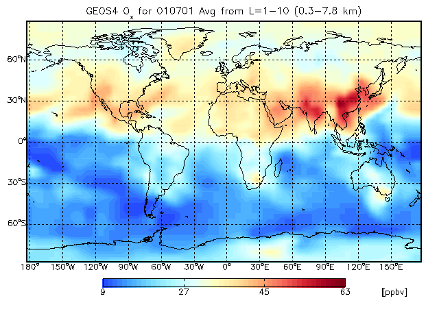
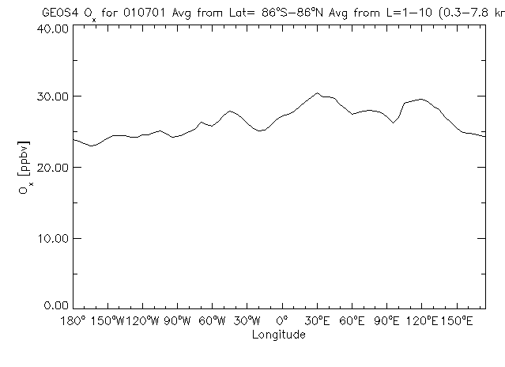

GAMAP v2–19 User Guide
Previous | Printable View (no frames)

NOTE: Please see the "GAMAP Tips and Tricks" page on the GEOS–Chem wiki for many more useful examples!
This section presents some "screen shots" (created with SCREEN2PNG) and the GAMAP commands used to generate them. These examples were produced in one session, so commands that were issued in between GAMAP calls remain valid for subsequent examples.
Also, please note that there are some GAMAP example routines (located in the gamap2/examples directory) that you may find useful. These routines illustrate several of GAMAP's powerful plotting features.
| CTM_EXAMPLES | General plotting examples |
| EXAMPLE_OVERPLOT | Overplot data atop an existing map |
| EXAMPLE_POLAR | Examples with polar plots |
| EXAMPLE_TVMAP | Examples with CTM_PLOT and TVMAP routines |
| EXAMPLE_ND48_ND49 | Examples reading in GEOS–Chem timeseries data |
| EXAMPLE_ANIM_TS | Animation example with GEOS–Chem timeseries data |
| EXAMPLE_MANIP_4D | Examples in manipulating 4D data blocks |

8.1 Longitude-latitude tracer map for a single model vertical layer

Let us use the WHITE–BLUE custom colortable:
myct, /WhBu
Start GAMAP with the following command:
gamap, 'IJ-AVG-$', file="myfile.bpch", tracer=2
wheremyfile.bpch is a binary punch file containing output from a global model simulation. As described in Chapter 3, you will be presented with a list of data blocks to choose from. GAMAP will ask you to select a data block from this list.
Enter S as first character to save data blocks. Select data records. Example: 1,3-9,20 (default : 1, Q=Quit, S=Save) >>
Select the first available data block. GAMAP will then ask you to specify the vertical level to plot
Enter level or level range (default : 1..30, Q=Quit) >>
Let's plot the surface level. Type 1 and then hit RETURN. GAMAP will then ask you to specify the longitude range:
Enter longitude or longitude range (default : -182.50..177.50, Q=Quit) >>
Here, you may specify a range of longitudes to plot or hit RETURN to accept the default range. We want to make a global plot, so at this point just hit RETURN.
Finally, GAMAP will ask you for the latitude range:
Enter latitude or latitude range (default : -88..88, Q=Quit) >>
Once again, since we want to create a global map, just hit RETURN to select the global defaults. NOTE: Because GEOS–Chem as well as some other CTM's have half-polar boxes (i.e. the polar boxes are 1/2 as big in latitude as elsewhere on the globe), then it is often not possible to plot the polar boxes without mis-matching the pixel grid with the overlaid map. The simple solution is just to avoid plotting the grid boxes at -90 and +90 degrees latitude. This is why the default latitude range is -88 to 88.
Now that we have selected the longitude, latitude, and altitude range to plot, GAMAP will ask you if you want to average or sum the data block over any dimensions. You will be prompted with:
% Selected data is 2-D [ Longitude,Latitude ]. Do you want to average or total the data? (0=No averaging, 1=lon, 2=lat, 4=alt, 8=Total, Q=Quit, Default=0)
Since we want to plot a single vertical level, no further averaging or summing is needed. HitRETURN to accept the default value of "No averaging". Since we will be making a 2-dimensional plot (longitude, latitude), you have many plot options from which to choose. GAMAP will prompt you with:
Select 2-D Plot Type: -------------------- 0 = B/W Contour lines 1 = Colored contour lines 2 = Filled contours 3 = Smooth Pixel Plot 4 = Coarse Pixel Plot <--- Default Your Choice ==>
The first time you start GAMAP, the default 2-dimensional plot type will be "4: Coarse Pixel Plot". This produces plots with a different color value per grid box. Let's opt for something a little bit nicer. Choose option #3 "Smooth Pixel Plot" and hit RETURN.
GAMAP will then ask you if you want to perform some unit conversion on the data before the final plot is displayed. You will see a prompt such as this:
Units: ppbv Enter new unit for all (Q=Quit, default: don't touch) >>
Hit RETURN to accept the default unit of ppbv. NOTE: Not all unit conversions were implemented. GAMAP can handle simple unit conversions such as pptv to ppbv and vice-versa, or molec/cm2/s to Tg. If you need to do more complicated unit conversions, it may be worthwhile to write your own code.
As described in Chapter 3, depending on how you have your gamap.defaults file set up, GAMAP may also ask you if you want to save to various file formats, including JPEG, PNG, TIFF, etc. You can reply with Y or N to each question (or type RETURN to accept the default value). Also, after the plot is created, GAMAP may ask you if you want to save the plot to PostScript format.
NOTE: For clarity, in the examples below we will omit the GAMAP prompts which ask you if you want to save the plot to a graphic file format (JPEG, PNG, etc) or to a PostScript file. These are pretty self-explanatory.

8.2 Longitude-latitude tracer map, averaging over 10 vertical levels

This above plot is similar to that of Chapter 8.1, only instead of a single level, we are averaging data over 10 vertical levels.
Let's change the color table to MODIFIED SPECTRUM, and lets' stretch the number of colors to 50:
myct, /modspec, ncolors=50
Start GAMAP with the following command:
gamap, 'IJ-AVG-$', /nofile, tracer=2
Since we have previously read frommyfile.bpch in the previous example, we do not have to specify the file name again. GAMAP keeps the data block information in memory between successive calls. We can now use the /nofile switch to indicate that we are going to read from a previously stored file.
Select the first available data block and fill in the following values. (BOLDFACE type denotes data values that are to be typed in response to a GAMAP prompt:
Enter level or level range (default : 1..30, Q=Quit) >> 1 10 Enter longitude or longitude range (default : -182.50..177.50, Q=Quit) >> RETURN Enter latitude or latitude range (default : -88..88, Q=Quit) >> RETURN Do you want to average or total the data? (0=No averaging, 1=lon, 2=lat, 4=alt, 8=Total, Q=Quit, Default=0) 4
Select 2-D Plot Type: -------------------- 0 = B/W Contour lines 1 = Colored contour lines 2 = Filled contours 3 = Smooth Pixel Plot <--- Default 4 = Coarse Pixel Plot Your Choice ==> RETURN
The averaging type 4 will average the data over the altitude dimension. A flag of 1 will average the data over longitudes (to produce a zonal mean plot) and a flag of 2 will average over latitudes (to produce a meridional mean plot).
You may also total data over the longitude, latitude, or altitude dimensions by adding the value "8" to the corresponding averaging flag. For example, to total over longitudes, use a flag of 9 ( = 8 + 1). To total over latitudes, use a flag of 10 ( = 8 + 2). To total over altitudes, use a flag of 12 ( = 8 + 4).
You may also average or total over more than one dimension at the same time. To have GAMAP print the total of the data over longitude, latitude, and altitude dimensions, use a t
Also note that "3: Smooth Pixel Plot" is now the default 2-D plot type, since this is what we used in the previous example (see Chapter 8.1). GAMAP remembers the values that you used from a previous call. Then you only need to hit RETURN in order to select the same value as last time. This is a great timesaver.

8.3 Longitude line plot of data averaged over latitude and altitude

With GAMAP you can average (or total) in more than one dimension at the same time. The above plot is a line plot (using the same data as in Chapter 8.2) which has been averaged over both latitude and altitude. To produce this plot, start GAMAP with the folowing command:
gamap, 'ij-avg-$', /nofile, tracer=2
GAMAP will then present you with a list of data blocks to select from. Pick the same one as in Chapter 8.2. Then respond as listed below to the following GAMAP prompts:
Enter level or level range (default : 1..30, Q=Quit) >> 1 10 Enter longitude or longitude range (default : -182.50..177.50, Q=Quit) >> RETURN Enter latitude or latitude range (default : -88..88, Q=Quit) >> -90 90 Do you want to average or total the data? (0=No averaging, 1=lon, 2=lat, 4=alt, 8=Total, Q=Quit, Default=0) 6
GAMAP will respond with:
%Selected data is 1-D. Data averaged over [Latitude,Altitude]. %GAMAP will create a line plot.
in order to give you confirmation that we have averaged the 3 dimensions down to 1 dimension. Because we wanted to average over two dimensions (lat, alt) at once, we need to sum the averaging flags. Averaging over latitude is denoted by a flag of 2 and averaging over altitude is denoted by a flag of 4. Adding these together, we get a flag of 6, which is the value that must be specified when GAMAP asks if you want to average or total the data.
NOTE: Here we also have specified a latitude range of -90 to 90. This is OK, since we are not plotting a longitude-latitude map, and we don't have to worry about 1/2 size polar boxes.

8.4 Polar plot with filled contours

It is also possible to make a polar plot with GAMAP. Let us use the same data ranges as in Chapter 8.3.
First we'll change the color table to WHITE–GREEN–YELLOW–RED with the following call to MYCT:
myct, /WhGrYlRd
Start by calling GAMAP with:
gamap, /nofile, /polar
The default is to plot the map with grid lines, latitude labels, and longitude labels. If you wish to suppress the latitude and longitude labels, type:
gamap, /nofile, /polar, /nogxlabels, /nogylabels
And this will just plot the grid lines. To suppress the grid lines, latitude labels, and longitude labels, type:
gamap, /nofile, /polar, /nogxlabels, /nogylabels, grid=0
Then reply as listed below to the following GAMAP prompts:
Enter level or level range (default : 1..30, Q=Quit) >> 1 10 %GAMAP: Lon is automatically set to [-180, 180] for polar plot Enter latitude or latitude range (default : -90..90, Q=Quit) >> 0 90 Do you want to average or total the data? (0=No averaging, 1=lon, 2=lat, 4=alt, 8=Total, Q=Quit, Default=0) 4
We selected to plot the entire Northern Hemisphere (0 to +90 degrees). You may also select to plot a smaller subset of the Northern Hemisphere (say +30 to +90 degrees), or the Southern Hemisphere (0 to -90 degrees). We are also averaging the 10 vertical levels in altitude, so we have chosen an averaging flag of 4.
For polar plots, it is not possible to select pixel plots. You can select from the following contour plot options:
Select 2-D Plot Type: -------------------- 0 = B/W Contour lines 1 = Colored contour lines 2 = Filled contours <--- Default Your Choice ==> 2
Pick filled contours (option 2) and then hit return. Your plot will look like the one pictured above.

NOTE: We also recommend that you take a moment to run the GAMAP example routines EXAMPLE_POLAR and EXAMPLE_TVMAP, which is located in the gamap2/examples directory. This will illustrate how to generate polar plots and lon-lat plots using IDL's various map projections.
The following plot, which illustrates some of GAMAP's newer polar plot options, was created with EXAMPLE_TVMAP:


In this example will create a zonal mean contour plot for Carbon Monoxide. We will explicitly define our contour levels.
Start GAMAP with the following commands:
c_lev = [5,10,15,20,30,35,40,45,50,60,70,80,90,100,150,200,500,1000,1500] gamap, 'IJ-AVG-$', /nofile, tracer=4, c_level=c_lev
Note that we have passed our contour levels to GAMAP directly via the C_LEVEL keyword. GAMAP accepts many keywords which are then passed to the relevant plotting programs that it calls.
To create the above plot, select a CO data block and respond to the following sequence of prompts as listed below:
Enter level or level range (default : 1..30, Q=Quit) >> 1 30 Enter longitude or longitude range (default : -182.50..177.50, Q=Quit) >> -180 180 Enter latitude or latitude range (default : 0..90, Q=Quit) >> -90 90 Do you want to average or total the data? (0=No averaging, 1=lon, 2=lat, 4=alt, 8=Total, Q=Quit, Default=0) 1
Now since we are making a 2-D plot (averaging over longitudes), we will be prompted with the following question once more. Select colored contour lines:
Select 2-D Plot Type: -------------------- 0 = B/W Contour lines 1 = Colored contour lines 2 = Filled contours <--- Default 3 = Smooth Pixel Plot 4 = Coarse Pixel Plot Your Choice ==> 1
You may also select black and white contour lines (option 0) for a similar plot style.


You can also place more than one GAMAP plot on a page with the MULTIPANEL routine.
Let's use the DIAL/LIDAR color table:
myct, /dial
Then, to specify 4 plots per page, call MULTIPANEL as follows:
multipanel, 4
This will split the screen into a grid of 2 x 2 panels. If you would like to explicitly specify the number of rows and columns per page, you can do that as well:
multipanel, rows=2, cols=2
Once you have called MULTIPANEL to specify the number of plots per page, you can invoke GAMAP with the following call. This will pick the NOx, Ox, CO, and ISOP tracers.
gamap, 'IJ-AVG-$', tracer=[1,2,4,6], /nofile, min_valid=0.5
The MIN_VALID keyword is the minimum value (in this case, 0.5 ppbv) that will be represented with a color from the colortable. Data values less than MIN_VALID will be rendered as white. MIN_VALID can come in handy when you are plotting data (such as emissions) which are only defined over continents.
To produce the plot above, type the following commands:
Enter level or level range (default : 1..30, Q=Quit) >> 1 Enter longitude or longitude range (default : -182.50..177.50, Q=Quit) >> RETURN Enter latitude or latitude range (default : -90..90, Q=Quit) >> -88 88 Do you want to average or total the data? (0=No averaging, 1=lon, 2=lat, 4=alt, 8=Total, Q=Quit, Default=0) 0
For this plot let us also pick the coarse pixel plot (option 4):
Select 2-D Plot Type: -------------------- 0 = B/W Contour lines 1 = Colored contour lines <--- Default 2 = Filled contours 3 = Smooth Pixel Plot 4 = Coarse Pixel Plot Your Choice ==> 4

8.7 Multipanel plots with top title
It is also possible to put title string atop a multi-panel plot.
Let's continue to use the DIAL/LIDAR color table:
myct, /dial
Start GAMAP with the following commands:
multipanel, 4, omargin=[0.01, 0.01, 0.01, 0.08 ] gamap, 'IJ-AVG-$', /nofile, tracer=[1,2,4,6], $ toptitle='Surface Level Tracers', min_valid=0.5
The OMARGIN keyword to MULTIPANEL specifies the amount of "cushion" in normalized coordinates (i.e. as a fraction of the total width or height) to place around the edges of the plot. OMARGIN is a 4 element vector which specifies the amount of "cushion" to place at the [ left, bottom, right, and top] edges of the plot. We need to have a little bit extra cushion at the top of the plot so that we can print the top title.
Then pick the first 4 data blocks for NOx, Ox, CO, and ISOP, and fill in the prompts as follows:
Enter level or level range (default : 1..30, Q=Quit) >> 1 Enter longitude or longitude range (default : -182.50..177.50, Q=Quit) >> RETURN Enter latitude or latitude range (default : -88..88, Q=Quit) >> RETURN Do you want to average or total the data? (0=No averaging, 1=lon, 2=lat, 4=alt, 8=Total, Q=Quit, Default=0) 0 Select 2-D Plot Type: -------------------- 0 = B/W Contour lines 1 = Colored contour lines 2 = Filled contours 3 = Smooth Pixel Plot 4 = Coarse Pixel Plot <--- Default Your Choice ==> 4

It is also possible to write a program which does not the main GAMAP routine "gamap.pro" to make a multi-panel plot. In this case, we use several other GAMAP routines (i.e. TVMAP, MULTIPANEL, SCREEN2PNG) separately.
pro multipanel_test
;------------------------------------------------------------------------
; THIS PROGRAM PLOTS 4 PANELS ON A PAGE WITH A COLORBAR AT THE BOTTOM.
; (bmy, 7/23/07)
;------------------------------------------------------------------------
; Let us use the WHITE-RED color table
MyCt, /WhRd
; Force IDL to resolve external functions
FORWARD_FUNCTION CTM_Type, CTM_Grid
; Open "IDL 0" plot window at 800 x 600 pixel resolution
Open_Device, WinParam=[0, 800, 600]
;---------------------------
; SET UP 4 PANELS ON A PAGE
;---------------------------
; OMARGIN specifies the amount of space you want to put around
; the outside of the entire plot area. It is specified as a 1-D
; vector as the amount of space you want to put around
; [ left, bot, right, top ] margins. The units of OMARGIN are the
; fraction of the X and Y extent of the plot (i.e. in "NORMAL"
; coordinates).
;
; In this example, let us put a 10% cushion of space at both
; the top and bottom of the plot area. Then we can place a
; colorbar on the bottom and an overall plot title on the top.
;
; left bot right top
Multipanel, OMargin=[ 0.0, 0.1, 0.0, 0.1 ], Rows=2, Cols=2
;--------------------------------------------------------------------
; NOTE: You can skip this part if you are reading data from a
; bpch file. For demo purposes I have to set up fake data and
; index arrays because I am not reading from a file.
; Fake data arrays -- different data ranges
InData1 = Dist( 72, 46 )
InData2 = Dist( 72, 46 ) + 5
InData3 = Dist( 72, 46 ) + 10
InData4 = Dist( 72, 46 ) + 15
; Grid parameters
InType = CTM_Type( 'GEOS4', Res=4 )
InGrid = CTM_Grid( InType )
; X and Y index arrays
XMid = InGrid.XMid
YMid = InGrid.YMid
;--------------------------------------------------------------------
;------------------------------------------
; GET OVERALL MIN & MAX OF ALL DATA ARRAYS
;------------------------------------------
; NOTE: We need to make a "new" data array for MINDATA by just
; putting all of the data arrays w/in brackets.
;
; Also, at the same time we do the; computation for the minimum,
; we can get the maximum value out with the MAX keyword.
MinData = Min( [ InData1, InData2, Indata3, InData4 ], Max=MaxData )
; While the OMARGIN keyword in the call to MULTIPANEL above controls
; the amount of white space around the total plot area, the MARGIN
; keyword in TVMAP controls the amount of white space around each
; of the individual plot panels. MARGIN is also in "NORMAL" coords,
; i.e. the fraction of the X and Y extent of the plot.
;
; Let us leave a 4% extent of white space on the left edge of each
; plot (for the latitude labels) and a 2% extent of white space
; around each other edge.
;
; NOTE: if you want the plots to touch each other, then set
; MARGIN=[0,0,0,0]. You can add more or less white space by trial
; and error until your plot looks the way you want it to.
;
; Left bot right top
Margin=[ 0.04, 0.02, 0.02, 0.02 ]
;----------------------------------------
; MAKE THE PLOTS
;----------------------------------------
; Plot 1
TvMap, InData1, XMid, YMid, $
Title='Plot 1', /Sample, /Grid, /Countries, /Coasts, $
MinData=MinData, MaxData=MaxData, Margin=Margin
; Plot 2
TvMap, InData2, XMid, YMid, $
Title='Plot 2', /Sample, /Grid, /Countries, /Coasts, $
MinData=MinData, MaxData=MaxData, Margin=Margin
; Plot 3
TvMap, InData3, XMid, YMid, $
Title='Plot 3', /Sample, /Grid, /Countries, /Coasts, $
MinData=MinData, MaxData=MaxData, Margin=Margin
; Plot 4
TvMap, InData4, XMid, YMid, $
Title='Plot 4', /Sample, /Grid, /Countries, /Coasts, $
MinData=MinData, MaxData=MaxData, Margin=Margin
;-----------------------------------------
; PUT COLORBAR BELOW THE PLOTS
;-----------------------------------------
; Put the colorbar at the bottom of the screen We use the CBPOSITION
; keyword to specify the bottom left (X0,Y0) and top right (X1,Y1)
; corner positions in NORMAL coordinates.
;
; Recall that we put a 10% cushion of white space at the bottom
; of the plot. So from 0.00 to 0.10 of the Y-extent of the page
; will be white space.
;
; Let's center the colorbar between 0.2 and 0.8 of the plot extent
; in X...and let the Y-extent go from 0.02 to 0.05.
;
; Also -- we will use the COLORBAR_NDIV function to align the
; colobar tickmarks along transitions between colors.
;
; X0 Y0, X1, Y1
Colorbar, CBPosition=[ 0.2, 0.02, 0.8, 0.05 ], $
Divisions=Colorbar_NDiv( Max=6 ), $
Min=MinData, Max=MaxData, Unit='[unitless]'
;-----------------------------------------
; PUT THE TITLE ON THE TOP OF THE SCREEN
;-----------------------------------------
; Use normal coordinates. 0.5 is 1/2 of the way across the X-extent
; of the plot. Recall that we also put a 10% cushion of space at
; the top of the plot with OMARGIN (i.e. from 0.90 to 1.0 is white
; space. Therefore, let's put the
XYOutS, 0.5, 0.95, 'Multipanel Plot example', /Normal, $
CharSize=3.0, Color=!MYCT.BLACK, Align=0.5
; Make a screenshot of the image
Screen2Png, 'myfile.png' ; PNG
end

8.8 3-D isopleth surface atop a world map
GAMAP can also print a 3-D isocontour surface over a world map.
NOTE: In IDL 6.0, there seems to be some problem with the number of allowable colors that can be used in an isopleth map. This probably has to do with the IDL Z-buffer. The problem is under investigation.
Let's go back to one plot panel per page, leaving a small margin around the plot area:
multipanel, 1, omargin=[0.04, 0.04, 0.04, 0.10]
We'll also need to extend the number of colors in the DIAL colortable, for plotting the isopleths:
myct_setcolor, /DIAL, ncolors=120
Let's assume we have a binary punch file for July 2001. Using CO (tracer #4) as our example, we call GAMAP with:
gamap, 'IJ-AVG-$', filename='ctm.bpch.2001', tracer=4
Then select a convenient CO data block. Select all levels, longitudes, and latitudes, and pick an averaging flag of 0. GAMAP will echo the following message:
% GAMAP will plot a 3-D isopleth surface.
Then pick the unit in which you want to display the data. Make sure the unit is "ppbv" (this might already be the default). GAMAP will then ask you:
Default Isopleths: 35.000 Enter isopleth value(s) (Q=Quit): >>
Select an isopleth value of 100, and then hit return. GAMAP should then produce a plot similar to the one shown above.
Note: Since the IDL Z-buffer device is used to create the isopleth map, it is currently not possible to create this plot in multipanel mode. A fix might be made available in a later version.
Also note: Since every point on the surface shown above is 100 ppbv CO, the plot colors are there just to make the surface more readily viewable by the human eye. This is why the colorbar has not been plotted.

8.9 Print anthropogenic emission totals
For this example, we need to use GAMAP routine CTM_SUM_EMISSIONS. We will be summing the emissions of anthropogenic NOx, archived in the ND28 diagnostic (which has category name ANTHSRCE).
Use your favorite file and call CTM_SUM_EMISSIONS with the following options:
ctm_sum_emissions, 'ANTHSRCE', filename='ctm.bpch.1996', tracer=1
You should get output similar to what is shown below:
Category: ANTHSRCE Tracer: NOx Cum Total: 20.7252 Tg N -------------------------------------------------------------------------- TAU0 = 96408.00, NYMD = 19960101, Total = 1.8543 Tg N TAU0 = 97152.00, NYMD = 19960201, Total = 1.7271 Tg N TAU0 = 97848.00, NYMD = 19960301, Total = 1.7365 Tg N TAU0 = 98592.00, NYMD = 19960401, Total = 1.7039 Tg N TAU0 = 99312.00, NYMD = 19960501, Total = 1.7645 Tg N TAU0 = 100056.00, NYMD = 19960601, Total = 1.6036 Tg N TAU0 = 100776.00, NYMD = 19960701, Total = 1.6883 Tg N TAU0 = 101520.00, NYMD = 19960801, Total = 1.6770 Tg N TAU0 = 102264.00, NYMD = 19960901, Total = 1.6838 Tg N TAU0 = 102984.00, NYMD = 19961001, Total = 1.7604 Tg N TAU0 = 103728.00, NYMD = 19961101, Total = 1.6883 Tg N TAU0 = 104448.00, NYMD = 19961201, Total = 1.8373 Tg N
Since the molecular weight of NOx is listed as 14e-3 kg/mole in the tracerinfo.dat file, ctm_sum_emissions.pro will report the sums in Tg N. If you would rather have Tg of NOx, then change the molecular weight in tracerinfo.dat from 14e-3 to 46e-3.
It is also possible to only report the cumulative sum and not the individual monthly sums. Call ctm_sum_emissions.pro again with the following line (here we have used /nofile!)
ctm_sum_emissions, 'ANTHSRCE', /nofile, tracer=1, /cum_only
You should get the following line as output:
Category: ANTHSRCE Tracer: NOx Cum Total: 20.7252 Tg N
You may also choose to print out more than one tracer at a time. For example, let's pick NOx and CO (tracers #1 and #4):
ctm_sum_emissions, 'ANTHSRCE', /nofile, tracer=[1,4], /cum_only
This will produce the following output:
Category: ANTHSRCE Tracer: NOx Cum Total: 20.7252 Tg N Category: ANTHSRCE Tracer: CO Cum Total: 400.5796 Tg
If you want to have ctm_sum_emissions.pro return the totals for a given tracer to the calling program, you can use the RESULT keyword as follows:
ctm_sum_emissions, 'ANTHSRCE', /nofile, tracer=1, /cum_only, Result=R
help, R, /structure
IDL will print the following:
** Structure <1030cd08>, 3 tags, length=20, refs=1: NAME STRING 'NOx' SUM FLOAT 20.7252 UNIT STRING 'Tg N'
In GAMAP v1–49 and higher, you may also specify a sub-region of the globe in which to total emissions, using the LAT, LON, and LEV keywords of ctm_sum_emissions.pro. For example, to only sum the NOx in the Northern Hemisphere, type:
ctm_sum_emissions, 'ANTHSRCE', /nofile, tracer=1, /cum_only, lat=[0,90]
and you will get the following output:
Category: ANTHSRCE Tracer: NOx Cum Total: 10.3626 Tg N

8.10 Print other emission totals
In addition to summing emissions from the ND36 diagnostsic, CTM_SUM_EMISSIONS can also sum emissions archived by the following GEOS-CHEM diagnostics:
ND28 (biomass burning)
Category = BIOBSRCE
ND29 (CO-source)
Category = CO--SRCE
ND32 (NOx-source):
Categories = NOX-AN-$, NOX-BB-$, NOX-LI-$, NOX-SOIL, NOX-BIOB, NOX-FERT, NOX-STRT
ND46 (biogenic emissions)
Category = BIOGSRCE
Call CTM_SUM_EMISSIONS with:
ctm_sum_emissions, 'BIOBSRCE', /nofile, tracer=4 ; CO ctm_sum_emissions, 'CO--SRCE', /nofile, tracer=1 ; CO anthro ctm_sum_emissions, 'NOX-SOIL', /nofile, tracer=1 ; soil NOx ctm_sum_emissions, 'BIOGSRCE', /nofile, tracer=1 ; Isoprene
You should get output similar to the previous example.

8.11 Using CTM_MAKE_DATAINFO and CTM_WRITEBPCH to create a "fake" restart file
Sometimes it is necessary to create a special restart file (in binary punch file format in order to initialize a GEOS-Chem run. This can be done using GAMAP routine CTM_MAKE_DATAINFO to create a DATAINFO structure for each tracer that you want to save to the restart file. These DATAINFO structures can then be concatenated into an array and sent to GAMAP helper routine CTM_WRITEBPCH, which will write the data to disk. Below is a sample program.
; Program to make a "fake" restart file for 24 full chemistry tracers
pro make_restart
; External functions
FORWARD_FUNCTION CTM_Type, CTM_Grid, CTM_Get_DataBlock, Nymd2Tau
; List of tracers for full chemistry
TracerList = IndGen(24) + 1
; Time indices for restart file -- Jan 1, 2001
Tau0 = Nymd2Tau(20010201L)
Tau1 = Nymd2Tau(20010201L)
; First time flag
First = 1L
; MODELINFO and GRIDINFO structures for 2 x 2.5 GEOS-3 grid
ModelInfo = CTM_Type( 'GEOS3', Resolution=2 )
GridInfo = CTM_Grid( ModelInfo )
; Define data array
NewData = FltArr( GridInfo.IMX, GridInfo.JMX, GridInfo.LMX )
; Set data everywhere to 1e-9 v/v (1 ppbv) for the sake of argument;
; you can decide how to initialize the data for your own purposes
NewData[*] = 1e-9
; Loop over tracers
for N = 0L, N_Elements( TracerList ) - 1L do begin
; Call CTM_MAKE_DATAINFO to make a DATAINFO structure
; for this tracer. Return this structure in THISDATAINFO
Success = CTM_Make_DataInfo( Float( NewData ), $
ThisDataInfo, $
ModelInfo=ModelInfo, $
GridInfo=GridInfo, $
DiagN='IJ-AVG-$', $
Tracer=TracerList[N], $
Tau0=Tau0, $
Tau1=Tau1, $
Unit='ppbv', $
Dim=[GridInfo.IMX, $
GridInfo.JMX, $
GridInfo.LMX, 0], $
First=[1L, 1L, 1L], $
/NO_GLOBAL )
; Stop upon error
if ( not Success ) then begin
S = 'Could not make data block for tracer '+String( N )
Message, S
endif
; NEWDATAINFO is an array of DATAINFO Structures
; Append THISDATAINFO onto the NEWDATAINFO array
if ( First ) $
then NewDataInfo = [ ThisDataInfo ] $
else NewDataInfo = [ NewDataInfo, ThisDataInfo ]
; Reset the first time flag
First = 0L
; Undefine THISDATAINFO for safety's sake
UnDefine, ThisDataInfo
endfor
; Write binary punch file for Jan 1, 2001
; CTM_WRITEBPCH needs an array of DATAINFO structures
CTM_WriteBpch, NewDataInfo, FileName='gctm.trc.20010101'
end
As of GAMAP v. 1.49, ctm_writebpch.pro accepts the /APPEND keyword. If you call ctm_writebpch.pro as follows:
; Write binary punch file for Jan 1, 2001 ; CTM_WRITEBPCH needs an array of DATAINFO structures CTM_WriteBpch, NewDataInfo, FileName='gctm.trc.20010101', /Append
then the data blocks would be appended onto the end of the file gctm.trc.20010101.
In GAMAP v2–10, the above code was released GAMAP routine MAKE_RESTART.

8.12 Using CTM_PLOT to produce figures for journals
Some journals now require figures be submitted in PostScript format, and that they be made to a certain size, and have a certain margin spacing around the edges. This can be accomplished with the GAMAP package routines, with minimal effort. Here is an example using CTM_PLOT (recall that GAMAP is just a user-friendly interface for CTM_PLOT ) to create a 3-paneled plot, with a single colorbar at the bottom.
; Let's use the DIAL color table
; stretched to 120 colors
MyCt, /DIAL, NColors=120
; Set up 3 rows and one column
Multipanel, Rows=3, Cols=1
; Size of paper (8.5 x 11 inches)
XMax = 8.5
YMax = 11.0
; Size of plot desired (inches)
XSize = 6
YSize = 5
; X and Y offsets to space figure evenly on page
XOffset = ( XMax - XSize ) / 2.0
YOffset = ( YMax - YSize ) / 2.0
; Open the PostScript file. Be sure to set 8 bits per pixel
; and specify portrait, with the size options we have computed
; above. The file name will be "myplot.ps".
Open_Device, /PS, /Color, $
Bits=8, Filename='myplot.ps', $
/Portrait, /Inches, $
XSize=XSize, YSize=YSize, $
XOffset=XOffset, YOffset=YOffset
; Name of the binary punch file we will read from
FileName = 'ctm.bpch'
; Margin keyword for TVMAP -- this will
; control white space around each plot window
Margin=[0.015, 0.015, 0.015, 0.015]
; Plot first panel -- w/o colorbar -- level 1
; Also suppress the colorbar unit string, and set
; the max and min of data with YRANGE. Lon and lat
; limits are set by LON and LAT.
CTM_Plot, 'IJ-AVG-$', $
Filename=FileName, Tracer=1, Lev=1, $
/Countries, /Coasts, /NoCbar, $
CbUnit='', Lat=[0, 60], Lon=[-120, 120], $
Yrange=[0, 15], Title='(a)', Margin=Margin, $
/Sample, CsFac=0.8, Min_Valid=0.05
; Plot 2nd panel -- w/o colorbar -- level 2
CTM_Plot, 'IJ-AVG-$', $
Filename=FileName, Tracer=1, Lev=2, $
/Countries, /Coasts, /NoCbar, $
CbUnit='', Lat=[0, 60], Lon=[-120, 120], $
Yrange=[0, 15], Title='(b)', Margin=Margin, $
/Sample, CsFac=0.8, Min_Valid=0.05
; Plot 3rd panel -- with colorbar -- level 3
CTM_Plot, 'IJ-AVG-$', $
Filename=FileName, Tracer=1, Lev=3, $
/Countries, /Coasts, Lat=[0, 60], $
Lon=[-120, 120], Yrange=[0, 15], Title='(c)', $
Margin=Margin, /Sample, CsFac=0.8, $
Min_Valid=0.05, CBFormat='(f14.2)'
; Close the PostScript file
Close_Device
The image displayed here was converted to GIF format from an actual PostScript file that was generated by the IDL code listed above. You can play with the keywords toctm_plot.pro until the plot comes out to your satisfaction.
To create landscape output instead, simply change the following lines in the example above:
; Size of paper (8.5 x 11 inches)
XMax = 11.0
YMax = 8.5
; Open the PostScript file. Now use /Landscape instead.
Open_Device, /PS, /Color, $
Bits=8, Filename='myplot.ps', $
/Landscape, /Inches, $
XSize=XSize, YSize=YSize, $
XOffset=XOffset, YOffset=YOffset
and your plot will be generated in landscape format.

8.13 Creating plots with a grayscale color table
When creating figures for journals, it is often expedient to use a black and white colortable such that the lowest value is either white or light gray and the highest value is either black or dark gray. This type of colortable can be generated with MYCT. Here is an example program to create a black and white polar contour plot.
pro test_grayscale
; File name
File = '~/IDL/gamap2/data_files/ctm.bpch.examples'
; Pick the first data block for Ox in the file
Success = CTM_Get_DataBlock( Data, 'IJ-AVG-$', $
FileName=File, $
Tracer=2, $
ModelInfo=ModelInfo, $
GridInfo=GridInfo, $
/First )
; Error check
if ( not Success ) then begin
Message, 'Data block not found!', /Continue
return
endif
; Pick NH boxes only
Ind = Where( GridInfo.YMid ge 0 )
Data = Data[*, Ind]
XMid = GridInfo.XMid
YMid = GridInfo.YMid[Ind]
; Contour levels
C_Levels = [ 10, 15, 20, 25, 30, 40, 50, 60, 65 ]
; Use the COLOR BREWER grayscale color table
MyCt, /WhGyBk
; Print min & max
print, 'MIN and MAX of data: ', Min( Data, max=M ), M
; Plot data -- use C.BLACK to denote the color for the map grid
TvMap, Data, XMid, YMid, $
/polar, /nogxlabels, /nogylabels, $
C_Levels=C_Levels, /FContour, /Grid, $
/Isotropic, Color=!MYCT.BLACK, /CBar, $
/Countries, /Coasts, Title='Test of polar plot'
end

8.14 Converting *.bpch output to other commonly-used file formats
It is often necessary to convert the binary punch v 2.0 format files (which is the standard file format of the GEOS-CHEM model) to other file formats, such as HDF, netCDF, or ASCII, so that data can be shared between different modeling groups effectively. GAMAP v. 1.52 now ships with routines which facilitate this process.
Let's assume we have a binary punch file myfile.bpch containing CTM model output for the following dates and times: 0 GMT 20020101, 0 GMT 20020102, and 0 GMT 20020103
To write the data contained in myfile.bpch into HDF (Hierarchical Data Format), type:
bpch2hdf, 'myfile.bpch', 'myfile.%DATE%.%TIME%.hdf'
This will create the following *.hdf files:
myfile.20020101.000000.hdf myfile.20020102.000000.hdf myfile.20020103.000000.hdf
Note that a new *.hdf file is created for each date and time combination contained in the binary punch file. The tokens %DATE% and %TIME% are replaced with the appropriate values of YYYYMMDD and HHMMSS. The tokens can be either upper or lowercase (i.e. %date% and %time% work equally well).
To create netCDF output from myfile.bpch, type:
bpch2nc, 'myfile.bpch', 'myfile.%DATE%.%TIME%.nc'
In the same way, this creates the files:
myfile.20020101.000000.nc myfile.20020102.000000.nc myfile.20020103.000000.nc
Finally, to create an ASCII file from myfile.bpch, type:
bpch2ascii, 'myfile.bpch', 'myfile.%DATE%.%TIME%.ascii'
which will create the files:
myfile.20020101.000000.ascii myfile.20020102.000000.ascii myfile.20020103.000000.ascii
The ASCII files will look something like this:
JV-MAP-$::JNO2 [s-1] 19970701/000000 4.0x5.0 72x46x19 0.000000e+00 0.000000e+00 0.000000e+00 0.000000e+00 0.000000e+00 0.000000e+00 0.000000e+00 0.000000e+00 0.000000e+00 0.000000e+00 0.000000e+00 0.000000e+00 0.000000e+00 0.000000e+00 0.000000e+00 0.000000e+00 0.000000e+00 0.000000e+00 0.000000e+00 0.000000e+00 0.000000e+00 etc...
Each data block in the ASCII file will have a header line, and then the data ordered in column-major format. To read this using Fortran 90, you can write a little code snippet such as:
1 2 3
123456789012345678901234567890
CHARACTER*255 LINE
REAL*8 DATA(IMX,JMX,LMX)
. . .
READ( UNIT, '(a)' ) LINE
READ( UNIT, '(7(es13.6,1x))' )
& (((DATA(I,J), I=1,IMX), J=1,JMX), L=1,LMX)
Where IMX, JMX, and LMX are the dimensions of the data block, as written to the header line.

HDF (Hierarchical Data Format) is a popular file format which is primarily used for earth science applications. The HDF format allows you to store many types of data within a HDF file, including:
The scientific data (HDF–SD) format is perhaps the most common format. A HDF–SD variable is basically just an array of data with special "attributes" attached to it. The attributes may contain more information about the particular variable, such as the unit name, the data range, or a short description.
At this time it is not possible to read from/write to HDF–SD files by using the main GAMAP routine. However, GAMAP comes with some helper routines which facilitates reading to and writing from the HDF–SD file format.
Writing data to a HDF file can also be easily done with GAMAP routine HDF_SETSD. Let's assume that we have 3 data arrays: Lon, Lat, and CO that we wish to write to the HDF file myfile.hdf . We proceed as follows:
; Find out if HDF is supported on this platform
IF ( HDF_Exists() eq 0 ) then Message, 'HDF not supported!'
; Open the HDF file for output
fId = HDF_SD_Start( 'myfile.hdf', /Create )
if ( fId lt 0 ) then Message, 'Error opening file!'
; Write longitude array to file
HDF_SetSd, fId, Lon, 'LON', $
LongName='Longitude', $
Unit='Degrees'
; Write Latitude array to file
HDF_SetSd, fId, Lat, 'LAT', $
LongName='Latitude', $
UNIT='Degrees'
; Write CO data array to file
HDF_SetSd, fId, DATA, 'CO', $
LongName='CO tracer data', $
Unit='v/v'
; Close HDF File
HDF_SD_End, fId
Note that we can attach a descriptive name string and a unit string to each of the data blocks that we write to myfile.hdf via the LONGNAME and UNIT keywords. To read the data back from myfile.hdf , we can use GAMAP helper routine hdf_getsd.pro as follows:
; Make sure HDF is supported on this platform if ( HDF_Exists() eq 0 ) then Message, 'HDF not supported!' ; Open the HDF file and get the file ID # (FID) fId = HDF_SD_Start( 'myfile.hdf', /Read ) if ( fId lt 0 ) then Message, 'Error opening file!' ; Read data fields from disk ; using GAMAP helper routine hdf_getsd.pro ; Also return LONGNAME and UNIT attributes via keywords Lon = HDF_GetSd( fId, 'LON', LongName=LonName, Unit=LonUnit ) Lat = HDF_GetSd( fId, 'LAT', LongName=LatName, Unit=LatUnit ) CO = HDF_GetSd( fId, 'CO', LongName=COName, Unit=COUnit ) ; Close the HDF file HDF_SD_End, fId
In both examples, note that we have to first open the HDF file for either writing or reading with the IDL routine hdf_sd_start.pro, and then close the file afterwards with hdf_sd_end.pro. You may also check to see if the HDF routines that ship with IDL are supported on your particular platform with HDF_EXISTS.
IDL also contains a neat tool called HDF_BROWSER. This is an interactive program which lets you examine the contents of a HDF, HDF-EOS, or netCDF file. It is called from the command line as follows:
result = hdf_browser( filename )
where result is a structure containing information about each of the variables and attributes stored in the file. You may find more information about this tool from IDL's on-line help pages.
It is recommended to use hdf_browser.pro to examine the file,and to note the names of the variables that you would like to read from the HDF file ahead of time. Then once you know the variable names, you can use hdf_getsd.pro to read them from disk as shown above.

HDF–EOS is an extension of the HDF file format which is primarily used for earth science applications. HDF–EOS files can contain three different types of data:
GAMAP can now read directly from HDF–EOS gridded data files. If you are reading from these types of files, then you can just use GAMAP in the same way as if you were reading from a binary punch file. See Chapter 8.1 and following.
If you want to read HDF–EOS gridded data directly (i.e. not using the main GAMAP routine gamap.pro), then you can call the helper routineeos_getgr.pro as follows:
; Make sure HDF-EOS is supported on this platform IF ( EOS_EXISTS() eq 0 ) then MESSAGE, 'HDF-EOS not supported!' ; Open the HDF file and get the file ID # (FID) FID = EOS_GD_OPEN( 'gridfile.hdf', /READ ) IF ( FID lt 0 ) THEN MESSAGE, 'Error opening file!' ; Read a variable from a swath file DATA = EOS_GETGR( fId, 'Latitude', GRIDNAME='GRID1' ) ; Close the file STATUS = EOS_SW_CLOSE( FID ) IF ( STATUS lt 0 ) THEN MESSAGE, 'Error closing file!'
At this time, it is not possible to read HDF–EOS satellite swath data directly into GAMAP. In order to read HDF–EOS swath data, you must use the helper routine eos_getsw.pro as follows:
; Make sure HDF-EOS is supported on this platform IF ( EOS_EXISTS() eq 0 ) then MESSAGE, 'HDF not supported!' ; Open the HDF file and get the file ID # (FID) FID = EOS_SW_OPEN( 'swathfile.hdf', /READ ) IF ( FID lt 0 ) THEN MESSAGE, 'Error opening file!' ; Read a variable from a swath file DATA = EOS_GETSW( fId, 'Latitude', SWATHNAME='swath1' ) ; Close the file STATUS = EOS_SW_CLOSE( FID ) IF ( STATUS lt 0 ) THEN MESSAGE, 'Error closing file!'
In both cases, it is helpful to first use the IDL routine hdf_browser.pro to determine the names of the variables that you would like to extract from the file.

GAMAP can now read directly from the following types of netCDF files:
If you are reading from these types of files, then you can just use GAMAP in the same way as if you were reading from a binary punch file. See Chapter 8.1 and following.
GAMAP also contains IDL helper routines for reading from and writing to netCDF files. These routines are analogous to the HDF routines from Chapter 8.14.
Let us assume that we have data arrays Lon, Lat, and CO, and we wish to write these to a netCDF file named myfile.nc. We proceed as follows.
; Find out if netCDF is supported on this platform IF ( NCDF_Exists() eq 0 ) then MESSAGE, 'netCDF not supported!' ; Open netCDF file for writing and get the file ID # (FID) ; /CLOBBER will overwrite the file if it already exists fId = NCDF_Create( 'myfile.nc', /Clobber ) if ( fID lt 0 ) then Message, 'Error opening file!' ; Define dimensions for netCDF file ; DIM1 dimension is for longitude ; DIM2 dimension is for latitude ; CO has dimensions (X,Y) DIM1 = NCDF_DimSet( FID, 'X', N_Elements( Lon ) ) DIM2 = NCDF_DimSet( FID, 'Y', N_Elements( Lat ) ) ; Go into netCDF DATA mode NCDF_Control, /ENDEF ; Call NCDF_SET to write longitude data to netCDF file NCDF_Set, fID, Lon, 'LON', [ DIM1 ], $ LongName='Longitude', $ Unit='unitless' ; Call NCDF_SET to write latitude data to netCDF file NCDF_Set, fID, Lat, 'LAT', [ DIM2 ], $ LongName='Longitude', $ Unit='unitless' ; Call NCDF_SET to write latitude data to netCDF file NCDF_Set, fID, CO, 'CO', [ DIM1, DIM2 ], $ LongName='Longitude', $ Unit='unitless' ; Close the netCDF file NCDF_Close, fID
To read the same data back from myfile.nc, we may do:
; Find out if netCDF is supported on this platform if ( NCDF_Exists() eq 0 ) then Message, 'netCDF not supported!' ; Open netCDF file and get the file ID # (FID) fId = NCDF_Open( 'myfile.nc' ) if ( fId lt 0 ) then Message, 'Error opening file!' ; Read data arrays from netCDF file ; Return data attributes in the VARINFO array ; Also returns the text from the UNIT string Lon = NCDF_Get( fId, 'LON', VarInfo=LonInfo, Unit=LonUnit ) Lat = NCDF_Get( fId, 'LAT', VarInfo=LatInfo, Unit=LatUnit ) CO = NCDF_Get( fId, 'CO', VarInfo=COInfo, Unit=COUnit ) ; Close the netCDF file NCDF_Close, fId
In addition, you may also use Martin Schultz's very useful IDL routine NCDF_READ to read from netCDF files. The advantages of this program is that it is very simple to use, and that you don't have to know the names of the variables that you want to read ahead of time. To read the same data as in the above example using ncdf_read.pro, we do the following:
; Read all variables from "myfile.nc" and return ; them to calling program via the RESULT structure NCDF_Read, Result, /All, FileName='myfile.nc' ; Plot the data TvMap, Result.CO, Resul t.Lon, Result.Lat, ...
You can find more information about NCDF_READ by typing at the IDL prompt:
usage, 'ncdf_read'

8.18 Difference plots with ctm_plotdiff.pro

GAMAP routine CTM_PLOTDIFF can be used to create 4-panel difference plots for a given tracer and level. The panels are:
[ data block #1 ] [ data block #2 ] [ abs diff #2 - #1 ] [ % diff #2 - #1 ]
The above plot was created with this calling sequence:
; Use the White-Blue-Blue-Red difference color table
;
myct, /WhBuBuRd
; Define the dates for both data blocks in FILENAME
;
Date = [ 20010701, 20020820 ]
; The function NYMD2TAU converts the date into a TAU value. TAU
; is the number of hours since 0 GMT on 1 Jan 1985. TAU is used
; to timestamp data blocks in GEOS-Chem output files.
;
; TAU0 is the TAU value at the start of the diagnostic period.
; In this case, the TAU0 array will hold the TAU values at 0 GMT
; 2001/07/01 and 2001/08/20.
;
Tau0 = Nymd2Tau( Date )
; Define the file name to use
;
FileName = '~/IDL/gamap2/data_files/ctm.bpch.examples'
; Call CTM_PLOTDIFF to make a 4-panel difference plot.
; [ Map of data block #1 ] [ Map of data block #2 ]
;
; [ Map of abs difference ] [ Map of % difference ]
;
CTM_PlotDiff, DiagN, $ ; Pass diagnostic category
FileName, $ ; You can compare data blocks from separate
FileName, $ ; files. Here they're in the same file.
Tracer=Tracer, $ ; Tracer number
Level=1, $ ; We will look at surface data (LEV=1)
Tau0=Tau0, $ ; Specify TAU0 of both data blocks
/Quiet, /NoPrint ; Suppress various print messages

8.19 Overlaying flight track or station data atop an image map with CTM_OVERLAY

GAMAP routine CTM_OVERLAY is a wrapper to TVMAP. It calls TVMAP to produce a map image (either pixel or contour). It can then be used to overlay the map with:
The calling sequence that produced the above plot is:
; let us use the WHITE-GREEN-YELLOW-RED colortable
Myct, /WhGrYlRd
; Set up for 4 plots on a page
;
MultiPanel, 4
; Remove existing entries in the global GAMAP common blocks
; (and also clean up all pointer and leftover memory!)
;
CTM_Cleanup
; Specify the parameters for the plot
FileName = '~/IDL/gamap2/data_files/ctm.bpch.examples'
DiagN = 'IJ-AVG-$'
Tracer = 2
; Get the data block for Ox from the file (as in Example 1)
;
CTM_Get_Data, DataInfo, DiagN, $
FileName=FileName, Tracer=Tracer, /First,_EXTRA=e
; Extract data from the DATAINFO structure
;
Data = *( DataInfo[0].Data )
; Extract MODELINFO & GRIDINFO structures from DATAINFO
;
GetModelAndGridInfo, DataInfo[0], InType, InGrid
; Get lon & lat arrays
XMid = InGrid.XMid
YMid = InGrid.YMid
; As in EXAMPLE 1, don't plot data near the poles.
; Also just take the data at the surface.
;
Ymid = YMid[1:InGrid.JMX-2]
Data = Data[*,1:InGrid.JMX-2,0]
;---------------------------------------------------------------------
; (6a) Plot flight track over TVMAP plot
;---------------------------------------------------------------------
; Make a "fake" aircraft track
; (of course, if you have a real flight track, use it...)
TrackX = Replicate( -60, 100 )
TrackY = Findgen( 100 ) - 50
TrackD = FltArr( 100 )
; CTM_OVERLAY calls TVMAP (you can pass it all of the same keywords
; as in EXAMPLE 1). However, it will also overplot either a line
; or individual station points.
;
; Here we will plot a pixel map w/ countries, continents, grid lines,
; and overlay a red, dashed-line flight track atop it.
;
Title='Pixel map overlaid w/ flight track'
CTM_OverLay, $
Data, XMid, YMid, $ ; Specify data & lon/lat arrays
TrackD, TrackX, TrackY, $ ; Specify flight track info & lon/lat
/Sample, $ ; Create a "boxy" pixel plot
/Isotropic, $ ; Use aspect ratio from pixel plot
/Grid, $ ; Plot grid lines
/Countries, /Coasts, /USA, $ ; Plot coasts, country & state boundaries
/CBar, Divisions=4, $ ; Specify a color bar w/ 4 divisions
Min_Val=1e-20, $ ; Set any data below 1e-20 to WHITE
T_Color=!MYCT.RED, $ ; Make the flight track RED
T_Thick=3, $ ; Make the flight track 3 PIXELS WIDE
T_LineStyle=2, $ ; Make the flight track a DASHED LINE
Title=Title, $ ; Specify the plot title
/NoAdvance ; Because we will be overplotting a
; 2nd flight track, don't advance
; to the next plot panel just yet
; Make a second "fake" aircraft track
; (of course, if you have a real flight track, use it...)
;
TrackX = Replicate( 60, 100 )
TrackY = Findgen( 100 ) - 50
TrackD = Fltarr( 100 )
; Call CTM_OVERLAY again with /OVERPLOT to overplot
; the second flight track on the same map
;
CTM_OverLay, $
Data, XMid, YMid, $ ; Specify data & lon/lat arrays
TrackD, TrackX, TrackY, $ ; Specify flight track info & lon/lat
T_Color=!MYCT.BLUE, $ ; Make the flight track YELLOW
T_Thick=3, $ ; Make the flight track 3 PIXELS WIDE
T_LineStyle=2, $ ; Make the flight track a DASHED LINE
/OverPlot
;---------------------------------------------------------------------
; (6b) Draw boxes for geographic regions atop a TVMAP plot
;---------------------------------------------------------------------
; Define (X,Y) coordinates of first tagged tracer region
;
TrackX = [ 0, 60, 60, 0, 0 ]
TrackY = [ 0, 0, 30, 30, 0 ]
TrackD = [ 0, 0, 0, 0, 0 ]
; Call CTM_OVERLAY again as above
;
Title='Pixel map overlaid w/ geographic region boxes'
CTM_OverLay, $
Data, XMid, YMid, $ ; Specify data & lon/lat arrays
TrackD, TrackX, TrackY, $ ; Specify lines of box region
/Sample, $ ; Create a "boxy" pixel plot
/Isotropic, $ ; Use aspect ratio from pixel plot
/Grid, $ ; Plot grid lines
/Countries, /Coasts, /USA, $ ; Plot coasts, country & state boundaries
/CBar, Divisions=4, $ ; Specify a color bar w/ 4 divisions
Min_Val=1e-20, $ ; Set any data below 1e-20 to WHITE
T_Color=!MYCT.BLACK, $ ; Make the box color BLACK
T_Thick=3, $ ; Make the box 3 PIXELS WIDE
T_LineStyle=0, $ ; Make the box a SOLID LINE
Title=Title, $ ; Specify the plot title
/NoAdvance ; Because we will be overplotting a
; 2nd geographic region, don't advance
; to the next plot panel just yet
; Define second tagged tracer region
;
TrackX = [ 0, 120, 120, 0, 0 ]
TrackY = [ 0, 0, -30, -30, 0 ]
TrackD = [ 0, 0, 0, 0, 0 ]
; Call CTM_OVERLAY_FLIGHT with /OVERPLOT to overplot
; atop the previously defined map
CTM_OverLay, $
Data, XMid, YMid, $ ; Specify data & lon/lat arrays
TrackD, TrackX, TrackY, $ ; Specify lines of box region
T_Color=!MYCT.RED, $ ; Make the box color RED
T_Thick=3, $ ; Make the box 3 PIXELS WIDE
T_LineStyle=0, $ ; Make the box a SOLID LINE
/OverPlot
;---------------------------------------------------------------------
; (6c) Draw individual station data points atop a TVMAP plot
;---------------------------------------------------------------------
; Define "fake" station data for demo
; along the equator between 60W and 60E
; (of course if you have real data, use that!)
Ind = Where( XMid ge -60 AND XMid le 60, N )
TrackD = Findgen(N) + 30
TrackY = Fltarr(N) + 60
TrackX = Xmid[Ind]
; Call CTM_OVERLAY with TVMAP keywords
; but also pass the station data points
;
Title='Pixel map overlaid w/ station data points'
CTM_OverLay, $
Data, XMid, YMid, $ ; Specify data & lon/lat arrays
TrackD, TrackX, TrackY, $ ; Specify station data and lon/lat arrays
/Sample, $ ; Create a "boxy" pixel plot
/Isotropic, $ ; Use aspect ratio from pixel plot
/Grid, $ ; Plot grid lines
/Countries, /Coasts, /USA, $ ; Plot coasts, country & state boundaries
/CBar, Division=4, $ ; Specify a color bar w/ 4 divisions
Min_Val=1e-20, $ ; Set any data below 1e-20 to WHITE
T_Symbol=1, $ ; Make the symbols FILLED CIRCLES
SymSize=2, $ ; Make the symbol size 2 x NORMAL
Title=Title ; Specify the plot title
;---------------------------------------------------------------------
; (6d) Same as (6c) but suppress borders on the filled circles
;---------------------------------------------------------------------
; Define "fake" station data for demo
; along the equator between 60W and 60E
; (of course if you have real data, use that!)
Ind = Where( XMid ge -60 AND XMid le 60, N )
TrackD = Findgen(N) + 30
TrackY = Fltarr(N) + 60
TrackX = Xmid[Ind]
; Call CTM_OVERLAY with TVMAP keywords
; but also pass the station data points
;
Title='Pixel map overlaid w/ station data points, but without borders'
CTM_OverLay, $
Data, XMid, YMid, $ ; Specify data & lon/lat arrays
TrackD, TrackX, TrackY, $ ; Specify station data and lon/lat arrays
/Sample, $ ; Create a "boxy" pixel plot
/Isotropic, $ ; Use aspect ratio from pixel plot
/Grid, $ ; Plot grid lines
/Countries, /Coasts, /USA, $ ; Plot coasts, country & state boundaries
/CBar, Division=4, $ ; Specify a color bar w/ 4 divisions
Min_Val=1e-20, $ ; Set any data below 1e-20 to WHITE
T_Symbol=1, $ ; Make the symbols FILLED CIRCLES
T_Color=-1, $ ; Suppress borders on the FILLED CIRCLES
SymSize=2, $ ; Make the symbol size 2 x NORMAL
Title=Title ; Specify the plot title

8.20 Finding grid boxes which belong to a particular country
GAMAP helper function FIND_CELLS_BY_COUNTRY can be used to return a mask array that indicates which grid boxes cover a particular country. The calling sequence that produced the above plot is:
; Set up for 4 plots on a page ; MultiPanel, 4 ; Set up 2 x 2.5 grid ; InType = CTM_Type( 'GEOS4', Res=2 ) InGrid = CTM_Grid( InType ) ; Get lon and lat arrays (don't plot poles) ; XMid = InGrid.Xmid YMid = InGrid.YMid YMid = Ymid[1:InGrid.JMX-2] ; Call FIND_CELLS_BY_COUNTRY to locate which grid boxes are within ; a given country. The country lookup table file is ; ~/IDL/gamap/countries.table. Country names must match the names ; within this file. ; ; Locate grid cells within the USA ; (Find all cells in which any part of the USA resides) ; ; Also -- we will not plot the data at the poles, as above. ; Mask = Find_Cells_By_Country( 'United States', InGrid, /Maximize ) TvMap, Mask[*,1:InGrid.JMX-2], XMid, Ymid, $ /Grid, /Countries, /Coasts, Min_Val=1e-20, /Sample, Title='USA' ; Locate grid cells w/in China ; Mask = Find_Cells_By_Country( 'China', InGrid, /Maximize ) TvMap, Mask[*,1:InGrid.JMX-2], XMid, Ymid, $ /Grid, /Countries, /Coasts, Min_Val=1e-20, /Sample, Title='China' ; Locate grid cells w/in Australia ; Mask = Find_Cells_By_Country( 'Australia', InGrid, /Maximize ) TvMap, Mask[*,1:InGrid.JMX-2], XMid, Ymid, $ /Grid, /Countries, /Coasts, Min_Val=1e-20, /Sample, Title='Australia' ; Locate grid cells w/in Russia ; Mask = Find_Cells_By_Country( 'Russia', InGrid, /Maximize ) TvMap, Mask[*,1:InGrid.JMX-2], XMid, Ymid, $ /Grid, /Countries, /Coasts, Min_Val=1e-20, /Sample, Title='Russia'